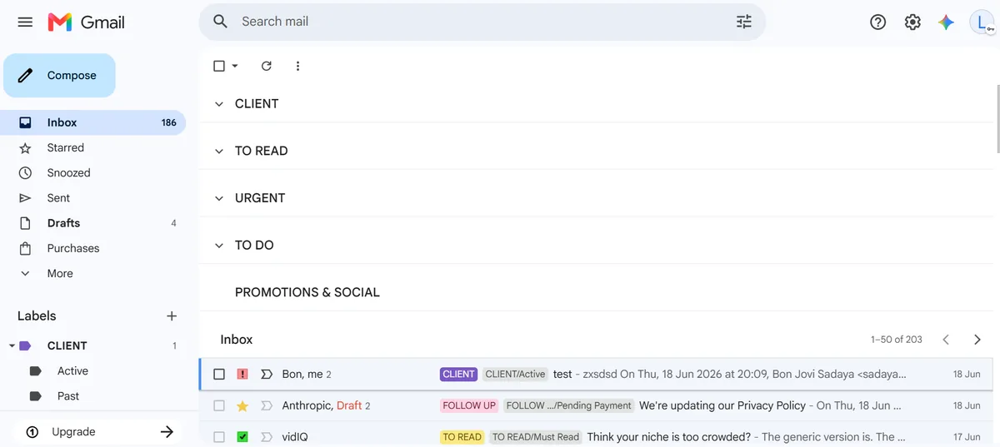
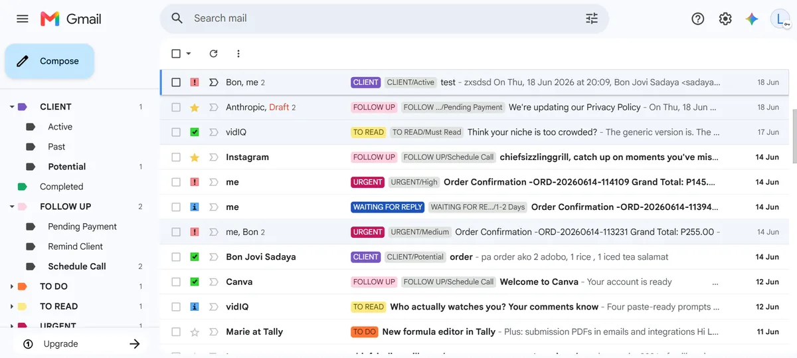

Project Detail
A structured, fully operational email management system built for client delegation — organizing emails without ever touching a client's password.
This project demonstrates a complete Gmail inbox management system built for a real client delegation scenario. Using Gmail's native tools — labels, filters, stars, templates, and delegated access — the inbox was transformed from unorganized emails into a clean, prioritized, and fully actionable workspace. No third-party tools required.
The system was built to be handed off — meaning the client never needs to share their password, explain their inbox, or manage email manually again.
Every email is categorized the moment it's identified. The label structure uses parent labels for broad categories and sub-labels for specific context — so nothing is ever just "somewhere in the inbox."
Each label is color-coded for instant visual scanning — no reading required to know what an email needs.
Stars add a second layer of visibility on top of labels — a quick glance at the inbox shows not just what category an email belongs to, but exactly what action it needs right now.
The inbox is split into labeled sections so high-priority emails are never buried under newsletters or promotions. Each section surfaces only what matters for that category — client emails at the top, everything else below.
Incoming emails are automatically sorted using Gmail filters — no manual labeling needed for recurring senders. Combined with canned response templates, common replies go out in seconds instead of minutes.
The entire system is managed through Gmail's delegated access feature — meaning the VA can read, organize, label, and respond to emails on the client's behalf without ever knowing the client's password. The client stays in full control of their account at all times.
The system follows a consistent daily workflow so the inbox never falls behind and the client always has a clear picture of what's pending.
Actual screenshots of the Gmail inbox management system in action — showing the label architecture, color-coded priority system, and sectioned inbox layout as a working, real setup.
// inbox sections — CLIENT · TO READ · URGENT · TO DO visible at a glance

// full label system — color-coded tags with sub-labels and star priority
